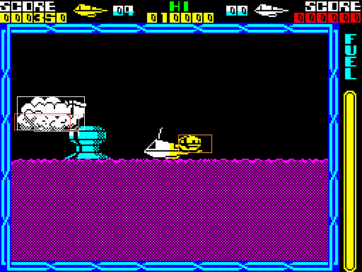
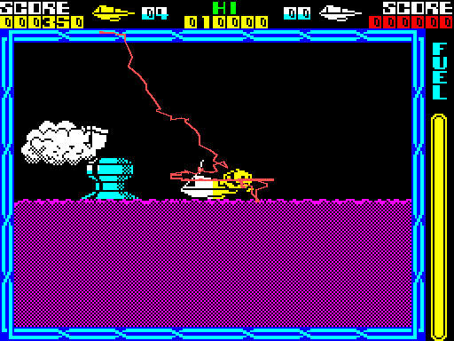

| Objects, attackers and their behaviour |
Everything that flies -- attackers, clouds, bullets, pick-ups, debris -- is one of nine 24-byte records at object_records, each with a type byte that picks an update routine and a list of frames. Once a pass the nine are rubbed out, updated, redrawn, and tested against the ship and the player's shots. What touching one does is a byte of effect bits.
The same layout serves the nine sky records, the ship's record, the four shot records (shot_records), the rocket's drawing record (rocket_record) and the first 24 bytes of the six ground-object records (ground_objects), so one set of routines moves, places and draws them all.
| Offset | Field |
|---|---|
| +0 | type: $FF free, $13-$1E for the sky objects |
| +1 +2 +3 | x: map column, pixel in the page, fraction |
| +4 +5 +6 | y: map row, pixel (the bottom line), fraction; y grows downwards |
| +7 +8 | speed across, signed 8.8 pixels a pass, high byte first |
| +9 +A | speed down, the same |
| +B +C | acceleration across |
| +D | two colours: ink and BRIGHT for odd passes in bits 0-3, for even passes in bits 4-7 |
| +E +F | acceleration down |
| +10 | flags: bits 0-2 top speed less one; 3 skip a placing; 4 free next pass; 5 shot; 6 straddles the left edge; 7 drawn |
| +11 +12 | where it was drawn: screen x, bottom line |
| +13 | frame: bits 0-3 the frame, 4-5 a count, 6-7 the count's reload |
| +14 | frame range: first frame in the high nibble, last in the low |
| +15 +16 | the type's own: a timer, a path step, a hit count, a target |
| +17 | contact cool-down or a missile's target in the high nibble; bit 3 exploding; bits 0-2 the explosion's step |
Records 0-3 are for attackers, 4-6 for what attackers and ground objects throw, 7-8 for clouds; all nine become the ship's wreck when it dies.
object_handlers has a word for each type from $13, and object_graphic_lists a word for each graphic number pointing at its frames; run_sky_object_handler jumps to the type's routine. Read from the game:
| Type | Update routine | Frames | What (by appearance and behaviour) |
|---|---|---|---|
| $13 | update_cloud | cloud_frames | cloud |
| $14 | update_attacker | type14_graphics | attacker |
| $15 | update_debris | attacker_frames | debris |
| $16 | update_attacker | $98A0 | attacker |
| $17 | update_attacker | $98A8 | attacker |
| $18 | update_attacker | $98AC | attacker |
| $19 | update_tough_attacker | $98B4 | the tough attacker |
| $1A | update_attacker | $98B8 | attacker |
| $1B | type1b_graphics | type1b_graphics | (ground objects only) |
| $1C | update_small_object | small_thing_frames | small things: bullets, pick-ups, wreck pieces |
| $1D | update_rammer | rammer_frames | rocks and comets of a meteor shower |
| $1E | update_rocket_part | rocket_part_frames | a rocket part falling into place |
Type $1B's word points at a graphic list (type1b_graphics), not code. It does no harm: type $1B is used only by ground objects, which never go through the table.
The update routines end in the shared tail of update_attacker: check_shot (shot? then score it and become debris), change_course (the type's steering now and then), accelerate (speed += acceleration, held to the top speed by limit_speed), animate_object (the animation: a count in bits 4-5 of +$13 steps the frame through the range in +$14), move_bouncing or move_or_explode (the landscape test, then move_object), place_object (placed on the screen, steered back to the view by steer_to_view), and the drawing (draw_object_images, colour_sprite; see drawing). Steering never sets a speed, only an acceleration, so every attacker swings smoothly and the clamp keeps it from running away.
Each update routine leaves a byte in contact_effect. ship_contact tests the object's drawn box against the ship's fixed box -- 40 pixels wide from x 100, 16 lines high -- with boxes_overlap, and on a touch acts on the bits from bit 7 down:
| Bit | Routine | Effect |
|---|---|---|
| 7 | contact_slow_ship | slow the ship: halve each of its speeds that agrees in sign with the object's |
| 6 | contact_damage | damage, at most once every 16 passes per object |
| 5 | contact_refuel | refuel: 28 of the gauge's 124 steps |
| 4 | contact_push | push: the object's speed halved and reversed, the same added to the ship's |
| 3 | contact_collect | collect: the object freed next pass, with a sound |
| 2 | contact_drain_fuel | drain fuel: 16 steps |
| 1 | contact_extra_life | an extra life, at most 9 |
| 0 | contact_destroy | destroy: the object counts as shot |
Every attacker leaves $50 (damage and push), a cloud $80, the rocks $51, debris 0, a falling rocket part $10. Type $1C's effect goes by its frame, from small_object_effects, read from the game:
| Frame | What | Effect | Bits |
|---|---|---|---|
| 0 | bullet | $50 | damage, push |
| 1 | bullet | $50 | damage, push |
| 2 | bullet | $50 | damage, push |
| 3 | the refuel pick-up | $28 | refuel, collect |
| 4 | pellet | $58 | damage, push, collect |
| 5 | pellet | $58 | damage, push, collect |
| 6 | the fuel thief | $1C | push, collect, drain fuel |
| 7 | pellet | $58 | damage, push, collect |
| 8 | the ship icon (an extra life) | $1A | push, collect, extra life |
| 9 | the shield ring | $FF | the shield |
| 10 | the attackers' dash | $58 | damage, push, collect |
$FF is the shield: ship_contact starts the shield timer and frees the ring.
object_load is recounted every pass: one for each record in use, one more for each drawn last pass, one more for a big cloud, plus half the rocket parts while the rocket is drawn. update_objects spawns below 4 -- half the time a cloud (spawn_cloud), otherwise an attacker (spawn_attacker) -- spawn_tick not at 8 or more, and find_free_record gives up at 7: a cheap stand-in for how busy the pass is, things on the screen weighing double because drawing is what costs. Attackers start out of sight at fixed points (spawn_points, allowed by the kind of cell, spawn_point_masks) and come in the order of wave_table.
Worked example: the ship left sitting on the plain at the start of a game (undamaged and refuelled between passes) for 600 passes, the nine records read after each. The load averaged 7.7 and reached 11. The records that started, by type:
| Type | What | Started | In records |
|---|---|---|---|
| $13 | cloud | 10 | 0, 2, 7, 8 |
| $17 | attacker | 1 | 1 |
| $18 | attacker | 1 | 0 |
| $1A | attacker | 1 | 2 |
| $1D | rocks and comets of a meteor shower | 8 | 0, 2, 3 |
The first pass after the hundredth with four or more things drawn: each record's drawn picture outlined in its colour, and the records as the game held them:

The sky objects over the plain.
| Record | Type | x (column, pixel) | y (row, pixel) | Speed (across, down) | Frame byte | |
|---|---|---|---|---|---|---|
| 0 | $13 | $0D $95 | $07 $7F | -2.00, -1.00 | $00 | drawn |
| 1 | $17 | $0E $28 | $07 $8F | +0.00, +0.00 | $F1 | drawn |
| 2 | free | |||||
| 3 | free | |||||
| 4 | free | |||||
| 5 | free | |||||
| 6 | free | |||||
| 7 | $13 | $0D $97 | $07 $7F | -2.00, -1.00 | $01 | drawn |
| 8 | $13 | $0D $A3 | $07 $80 | -2.00, -1.00 | $00 | drawn |
The path of the attacker in record 1 over the 568 passes it was drawn, the middle of its picture each pass, over the same screen: in from the edge of the view and down onto the ship, where it stays, pushing it about (the damage was undone between passes, so the ship lived on). The screen positions include the small scrolls those pushes caused.

Record 1's path.